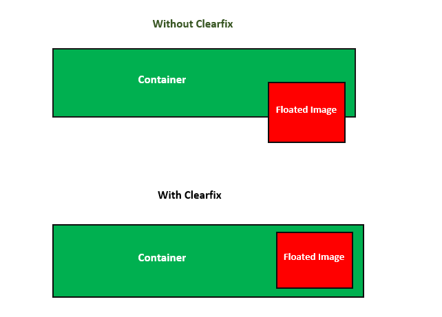
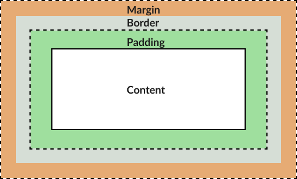
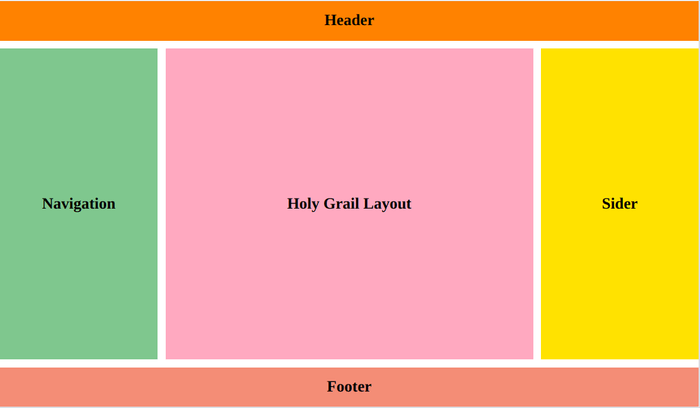

Box Model in CSS
The box model in CSS is the fundamental concept of how elements are rendered in a document. It consists of content, padding, border, and margin.
The box-sizing property determines how the width and height of an element are calculated, including its padding and border. By default, it's set to content-box, which means the width and height only include the content, but you can change it to border-box to include padding and border in the dimensions.

Clearfix Hack
The clearfix hack is a technique used to clear the floated elements within a container to ensure proper layout and prevent collapsing of the container's height. It's typically applied to parent containers that contain floated child elements.
Margin Collapse

Margin collapse occurs when the top and bottom margins of two or more elements are adjacent. Instead of stacking, the margins collapse into a single margin. This behavior can affect the spacing between elements.
margin: auto; is commonly used to horizontally center an element within its parent container. Negative margin values can be used to create overlapping or offset effects between elements.
Holy Grail Layout

The Holy Grail Layout is a classic web design pattern consisting of a header, footer, and three columns of content, where the center column is the tallest and is positioned between the other two columns.
One problem with achieving the Holy Grail Layout was the difficulty in making all columns the same height without using hacks or complex CSS.
Modern ways to achieve the Holy Grail Layout include using Flexbox or CSS Grid layout techniques, which provide more straightforward and flexible solutions.